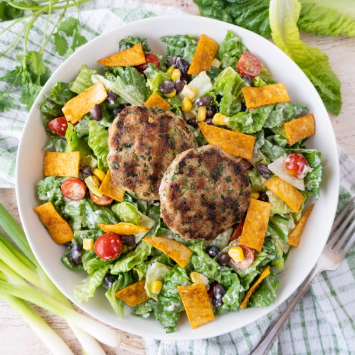

Turkey Patties over Tex-Mex Caesar with Black Beans & Tortilla Chips

Total Time
40 min
Nutrition (Per Serving)
692.2 kcalCalories
54.8 gProtein
52.7 gCarbs
32.1 gFat
Full nutrition table
| Calories | 692.2 kcal |
| Total fat | 32.1 g |
| Saturated fat | 7.9 g |
| Trans fat | 0.3 g |
| Cholesterol | 128.5 mg |
| Sodium | 441.7 mg |
| Carbohydrates | 52.7 g |
| Fiber | 18 g |
| Sugars | 9.1 g |
| Protein | 54.8 g |
| Potassium | 1968.3 mg |
| Calcium | 288.9 mg |
| Iron | 8.4 mg |
| Vitamin A | 1155.4 IU |
| Vitamin C | 39.1 mg |
| Vitamin D | 26.5 IU |
Cookware
Ingredients
- 1 (15 oz) canblack beans
- 1 small bunchcilantro
- ⅔ cupfrozen corn
- 4 clovesgarlic
- 1 pintgrape tomatoes
- 1 small bunchgreen onions (scallions)
- 1 ½ lbground turkey
- 1lime
- 2 ozParmesan cheese
- ½ cupplain Greek yogurt
- 2 headsromaine lettuce
- 4small corn tortillas
- black pepper
- chili powder
- Dijon mustard
- extra virgin olive oil
- oregano, dried
- salt
- Worcestershire sauce
Steps
- Preheat oven to 350°F.
- Wash and dry the fresh produce.1 small bunch cilantro
1 small bunch green onions (scallions)
1 lime
1 pint grape tomatoes
2 heads romaine lettuce - Shave cilantro leaves off the stems; discard stems and mince the leaves. Trim and mince green onions; place both in a medium bowl.
- Peel and mince garlic; add to the bowl with the herbs along with turkey and spices. Mix with your hands until well combined.2 cloves garlic
1 ½ lb ground turkey
1 tsp chili powder
½ tsp salt
½ tsp oregano, dried - Using a ⅓-cup measure, form turkey mixture into ½-inch thick patties. Place on a plate.
- Preheat a grill pan or skillet over medium-high heat.
- While the grill pan heats up, place corn in a colander. Drain beans in the colander with the corn, rinse under hot water (from the tap) to thaw, and set aside to drain further.⅔ cup frozen corn
1 (15 oz) can black beans - Once the grill pan is hot, coat with oil. Working in batches if necessary, add turkey patties to the pan and cook, flipping once, until golden and cooked through, 8-10 minutes. Remove to a clean plate.1 tbsp extra virgin olive oil
- Meanwhile, cut each tortilla into bite-sized strips and place on a baking sheet pan. Drizzle with oil, season with chili powder and salt, and toss to coat; spread out in a single layer. Place in the oven and bake, flipping once, until golden and crispy, 10-12 minutes. Remove from oven and set aside.4 small corn tortillas
2 tsp extra virgin olive oil
½ tsp chili powder
¼ tsp salt - While the tortilla chips are baking, finely grate Parmesan; place in a large bowl.2 oz Parmesan cheese
- Peel and mince additional garlic; add to bowl with the Parmesan.2 cloves garlic
- Juice lime into the bowl; add yogurt, oil, Worcestershire, Dijon, salt, and pepper. Whisk to combine the dressing.½ cup plain Greek yogurt
2 tbsp extra virgin olive oil
2 tsp Worcestershire sauce
1 tsp Dijon mustard
½ tsp salt
½ tsp black pepper - Halve tomatoes and add to the bowl with the dressing.
- Chop or tear lettuce into bite-sized pieces; add to the bowl along with the corn and beans. Toss to combine the salad.
- To serve, divide salad between plates or bowls; top with turkey patties and tortilla chips. Enjoy!